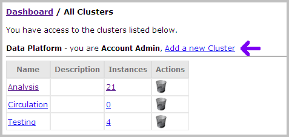
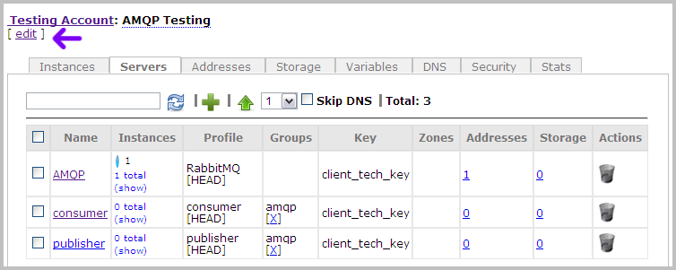
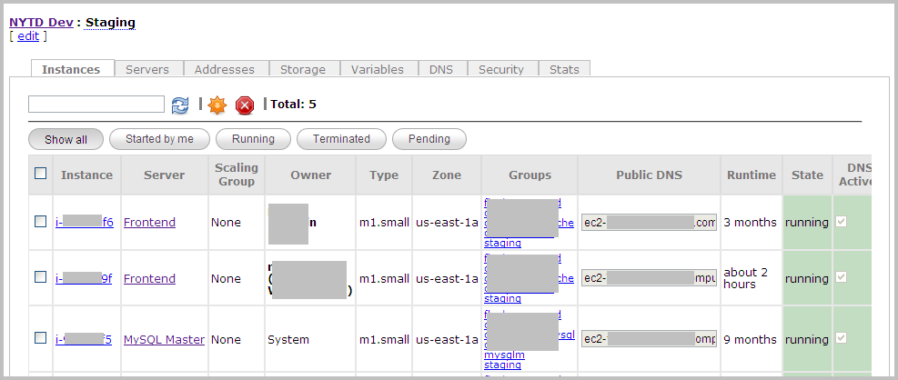

Managing Clusters
| PERMISSIONS REQUIRED |
| To manage a cluster, you need to have administrator access to that cluster. To add a cluster, you need to have administrator access to the relevant provider account. To get access, contact your Nimbul administrator. See also Permissions and Roles and Clusters and Servers: Overview. |
Topics covered on this page:
Add, Edit or Delete a Cluster
Configure or Update Cluster Details
Add, Edit or Delete a Cluster
Adding a Cluster
To add a cluster, complete these steps:
- In the main Nimbul menu, click Clusters.
- To the right of the name of any provider account, click Add a New Cluster. (This link does not appear if you do not have administrator access to any provider accounts.)
 - On the New Cluster page, select a provider account. Enter a cluster name and, optionally, a description.
- Click Create Cluster.
Editing a Cluster
To edit basic cluster information, complete these steps:
- In the main Nimbul menu, click Clusters.
- In the Name column of the appropriate provider account table, click the name of the cluster you want to edit.
- At the top of the cluster details page (under the name of the cluster), click the edit link.
 - Edit the fields as necessary.
- To save your changes, click Update.
Deleting a Cluster
WARNING: In most cases, you will not need to delete a cluster. A cluster can remain dormant in Nimbul indefinitely. Delete the cluster only if you are certain you will never need access to it again.
To delete a cluster, complete these steps:
- In the main Nimbul menu, click Clusters.
- Find the cluster you want to delete. In the Actions column for that cluster’s row, click the trash can icon. A warning message appears.
- Click OK. A second warning appears. Type
yes, then click OK.
Configure or Update a Cluster
Viewing Cluster Details
To configure or update a cluster, first view the cluster details by completing these steps:
- In the main Nimbul menu, click Clusters.
- Find the relevant provider account table. In the Name column, click the name of the cluster you want to configure or update. The cluster details page appears.

The cluster details page contains the following tabs:
| Tab | Available Actions |
| Instances |
|
|---|---|
| Servers |
|
| Addresses |
|
| Storage |
|
| Variables |
Cluster variables and startup scripts are in conjunction with the variables and startup script defined at the provider account level and the server level. |
| DNS |
|
| Security |
|
| Stats |
|
Configuring and Updating Cluster Details
UI Elements
Use the tabs described above to configure and update cluster details as you use Nimbul. Note the following UI elements on each tab:
- Click links to servers, instances, security groups and other objects to get more details and make changes.
- Use the standard icons to enable, disable, add and remove various resources.
- Look for confirmation messages and other information in the left margin (under the main Nimbul menu).
- Be sure to click Update buttons where available.
For more information, see User Interface Elements.
Related Topics
Next: Managing Servers »